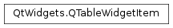

QTableWidgetItem¶
Synopsis¶
Functions¶
- def
background() - def
backgroundColor() - def
checkState() - def
column() - def
flags() - def
font() - def
foreground() - def
icon() - def
isSelected() - def
row() - def
setBackground(brush) - def
setBackgroundColor(color) - def
setCheckState(state) - def
setFlags(flags) - def
setFont(font) - def
setForeground(brush) - def
setIcon(icon) - def
setSelected(select) - def
setSizeHint(size) - def
setStatusTip(statusTip) - def
setText(text) - def
setTextAlignment(alignment) - def
setTextColor(color) - def
setToolTip(toolTip) - def
setWhatsThis(whatsThis) - def
sizeHint() - def
statusTip() - def
tableWidget() - def
text() - def
textAlignment() - def
textColor() - def
toolTip() - def
type() - def
whatsThis()
Detailed Description¶
The
PySide2.QtWidgets.QTableWidgetItemclass provides an item for use with thePySide2.QtWidgets.QTableWidgetclass.Table items are used to hold pieces of information for table widgets. Items usually contain text, icons, or checkboxes
The
PySide2.QtWidgets.QTableWidgetItemclass is a convenience class that replaces theQTableItemclass in Qt 3. It provides an item for use with thePySide2.QtWidgets.QTableWidgetclass.Top-level items are constructed without a parent then inserted at the position specified by a pair of row and column numbers:
newItem = QTableWidgetItem(tr("%s" % pow(row, column+1))) tableWidget.setItem(row, column, newItem)Each item can have its own background brush which is set with the
PySide2.QtWidgets.QTableWidgetItem.setBackground()function. The current background brush can be found withPySide2.QtWidgets.QTableWidgetItem.background(). The text label for each item can be rendered with its own font and brush. These are specified with thePySide2.QtWidgets.QTableWidgetItem.setFont()andPySide2.QtWidgets.QTableWidgetItem.setForeground()functions, and read withPySide2.QtWidgets.QTableWidgetItem.font()andPySide2.QtWidgets.QTableWidgetItem.foreground().By default, items are enabled, editable, selectable, checkable, and can be used both as the source of a drag and drop operation and as a drop target. Each item’s flags can be changed by calling
PySide2.QtWidgets.QTableWidgetItem.setFlags()with the appropriate value (seeQt.ItemFlags). Checkable items can be checked and unchecked with thePySide2.QtWidgets.QTableWidgetItem.setCheckState()function. The correspondingPySide2.QtWidgets.QTableWidgetItem.checkState()function indicates whether the item is currently checked.
Subclassing¶
When subclassing
PySide2.QtWidgets.QTableWidgetItemto provide custom items, it is possible to define new types for them so that they can be distinguished from standard items. The constructors for subclasses that require this feature need to call the base class constructor with a new type value equal to or greater thanUserType.
-
class
PySide2.QtWidgets.QTableWidgetItem(icon, text[, type=Type])¶ -
class
PySide2.QtWidgets.QTableWidgetItem(text[, type=Type]) -
class
PySide2.QtWidgets.QTableWidgetItem(other) -
class
PySide2.QtWidgets.QTableWidgetItem([type=Type]) Parameters: - icon –
PySide2.QtGui.QIcon - type –
PySide2.QtCore.int - other –
PySide2.QtWidgets.QTableWidgetItem - text – unicode
Constructs a table item with the given
iconandtext.Constructs a table item with the given
text.Constructs a copy of
other. Note thatPySide2.QtWidgets.QTableWidgetItem.type()andPySide2.QtWidgets.QTableWidgetItem.tableWidget()are not copied.This function is useful when reimplementing
PySide2.QtWidgets.QTableWidgetItem.clone().Constructs a table item of the specified
typethat does not belong to any table.- icon –
-
PySide2.QtWidgets.QTableWidgetItem.ItemType¶ This enum describes the types that are used to describe table widget items.
Constant Description QTableWidgetItem.Type The default type for table widget items. QTableWidgetItem.UserType The minimum value for custom types. Values below are reserved by Qt. You can define new user types in
PySide2.QtWidgets.QTableWidgetItemsubclasses to ensure that custom items are treated specially.
-
PySide2.QtWidgets.QTableWidgetItem.background()¶ Return type: PySide2.QtGui.QBrushReturns the brush used to render the item’s background.
-
PySide2.QtWidgets.QTableWidgetItem.backgroundColor()¶ Return type: PySide2.QtGui.QColorThis function is deprecated. Use
PySide2.QtWidgets.QTableWidgetItem.background()instead.
-
PySide2.QtWidgets.QTableWidgetItem.checkState()¶ Return type: PySide2.QtCore.Qt.CheckStateReturns the checked state of the table item.
-
PySide2.QtWidgets.QTableWidgetItem.clone()¶ Return type: PySide2.QtWidgets.QTableWidgetItemCreates a copy of the item.
-
PySide2.QtWidgets.QTableWidgetItem.column()¶ Return type: PySide2.QtCore.intReturns the column of the item in the table. If the item is not in a table, this function will return -1.
-
PySide2.QtWidgets.QTableWidgetItem.data(role)¶ Parameters: role – PySide2.QtCore.intReturn type: object Returns the item’s data for the given
role.
-
PySide2.QtWidgets.QTableWidgetItem.flags()¶ Return type: PySide2.QtCore.Qt.ItemFlagsReturns the flags used to describe the item. These determine whether the item can be checked, edited, and selected.
-
PySide2.QtWidgets.QTableWidgetItem.font()¶ Return type: PySide2.QtGui.QFontReturns the font used to render the item’s text.
-
PySide2.QtWidgets.QTableWidgetItem.foreground()¶ Return type: PySide2.QtGui.QBrushReturns the brush used to render the item’s foreground (e.g. text).
-
PySide2.QtWidgets.QTableWidgetItem.icon()¶ Return type: PySide2.QtGui.QIconReturns the item’s icon.
-
PySide2.QtWidgets.QTableWidgetItem.isSelected()¶ Return type: PySide2.QtCore.boolReturns
trueif the item is selected, otherwise returnsfalse.
-
PySide2.QtWidgets.QTableWidgetItem.__lt__(other)¶ Parameters: other – PySide2.QtWidgets.QTableWidgetItemReturn type: PySide2.QtCore.boolReturns
trueif the item is less than theotheritem; otherwise returns false.
-
PySide2.QtWidgets.QTableWidgetItem.read(in)¶ Parameters: in – PySide2.QtCore.QDataStreamReads the item from stream
in.
-
PySide2.QtWidgets.QTableWidgetItem.row()¶ Return type: PySide2.QtCore.intReturns the row of the item in the table. If the item is not in a table, this function will return -1.
-
PySide2.QtWidgets.QTableWidgetItem.setBackground(brush)¶ Parameters: brush – PySide2.QtGui.QBrushSets the item’s background brush to the specified
brush.
-
PySide2.QtWidgets.QTableWidgetItem.setBackgroundColor(color)¶ Parameters: color – PySide2.QtGui.QColorThis function is deprecated. Use
PySide2.QtWidgets.QTableWidgetItem.setBackground()instead.
-
PySide2.QtWidgets.QTableWidgetItem.setCheckState(state)¶ Parameters: state – PySide2.QtCore.Qt.CheckStateSets the check state of the table item to be
state.
-
PySide2.QtWidgets.QTableWidgetItem.setData(role, value)¶ Parameters: - role –
PySide2.QtCore.int - value – object
Sets the item’s data for the given
roleto the specifiedvalue.Note
The default implementation treats
Qt.EditRoleandQt.DisplayRoleas referring to the same data.See also
Qt.ItemDataRolePySide2.QtWidgets.QTableWidgetItem.data()- role –
-
PySide2.QtWidgets.QTableWidgetItem.setFlags(flags)¶ Parameters: flags – PySide2.QtCore.Qt.ItemFlagsSets the flags for the item to the given
flags. These determine whether the item can be selected or modified.
-
PySide2.QtWidgets.QTableWidgetItem.setFont(font)¶ Parameters: font – PySide2.QtGui.QFontSets the font used to display the item’s text to the given
font.
-
PySide2.QtWidgets.QTableWidgetItem.setForeground(brush)¶ Parameters: brush – PySide2.QtGui.QBrushSets the item’s foreground brush to the specified
brush.
-
PySide2.QtWidgets.QTableWidgetItem.setIcon(icon)¶ Parameters: icon – PySide2.QtGui.QIconSets the item’s icon to the
iconspecified.
-
PySide2.QtWidgets.QTableWidgetItem.setSelected(select)¶ Parameters: select – PySide2.QtCore.boolSets the selected state of the item to
select.
-
PySide2.QtWidgets.QTableWidgetItem.setSizeHint(size)¶ Parameters: size – PySide2.QtCore.QSizeSets the size hint for the table item to be
size. If no size hint is set, the item delegate will compute the size hint based on the item data.
-
PySide2.QtWidgets.QTableWidgetItem.setStatusTip(statusTip)¶ Parameters: statusTip – unicode Sets the status tip for the table item to the text specified by
statusTip.PySide2.QtWidgets.QTableWidgetmouse tracking needs to be enabled for this feature to work.
-
PySide2.QtWidgets.QTableWidgetItem.setText(text)¶ Parameters: text – unicode Sets the item’s text to the
textspecified.
-
PySide2.QtWidgets.QTableWidgetItem.setTextAlignment(alignment)¶ Parameters: alignment – PySide2.QtCore.intSets the text alignment for the item’s text to the
alignmentspecified.See also
PySide2.QtWidgets.QTableWidgetItem.textAlignment()Qt.Alignment
-
PySide2.QtWidgets.QTableWidgetItem.setTextColor(color)¶ Parameters: color – PySide2.QtGui.QColorThis function is deprecated. Use
PySide2.QtWidgets.QTableWidgetItem.setForeground()instead.
-
PySide2.QtWidgets.QTableWidgetItem.setToolTip(toolTip)¶ Parameters: toolTip – unicode Sets the item’s tooltip to the string specified by
toolTip.
-
PySide2.QtWidgets.QTableWidgetItem.setWhatsThis(whatsThis)¶ Parameters: whatsThis – unicode Sets the item’s “What’s This?” help to the string specified by
whatsThis.
-
PySide2.QtWidgets.QTableWidgetItem.sizeHint()¶ Return type: PySide2.QtCore.QSizeReturns the size hint set for the table item.
-
PySide2.QtWidgets.QTableWidgetItem.statusTip()¶ Return type: unicode Returns the item’s status tip.
-
PySide2.QtWidgets.QTableWidgetItem.tableWidget()¶ Return type: PySide2.QtWidgets.QTableWidgetReturns the table widget that contains the item.
-
PySide2.QtWidgets.QTableWidgetItem.text()¶ Return type: unicode Returns the item’s text.
-
PySide2.QtWidgets.QTableWidgetItem.textAlignment()¶ Return type: PySide2.QtCore.intReturns the text alignment for the item’s text.
See also
PySide2.QtWidgets.QTableWidgetItem.setTextAlignment()Qt.Alignment
-
PySide2.QtWidgets.QTableWidgetItem.textColor()¶ Return type: PySide2.QtGui.QColorThis function is deprecated. Use
PySide2.QtWidgets.QTableWidgetItem.foreground()instead.
-
PySide2.QtWidgets.QTableWidgetItem.toolTip()¶ Return type: unicode Returns the item’s tooltip.
-
PySide2.QtWidgets.QTableWidgetItem.type()¶ Return type: PySide2.QtCore.intReturns the type passed to the
PySide2.QtWidgets.QTableWidgetItemconstructor.
-
PySide2.QtWidgets.QTableWidgetItem.whatsThis()¶ Return type: unicode Returns the item’s “What’s This?” help.
-
PySide2.QtWidgets.QTableWidgetItem.write(out)¶ Parameters: out – PySide2.QtCore.QDataStreamWrites the item to stream
out.
© 2018 The Qt Company Ltd. Documentation contributions included herein are the copyrights of their respective owners. The documentation provided herein is licensed under the terms of the GNU Free Documentation License version 1.3 as published by the Free Software Foundation. Qt and respective logos are trademarks of The Qt Company Ltd. in Finland and/or other countries worldwide. All other trademarks are property of their respective owners.